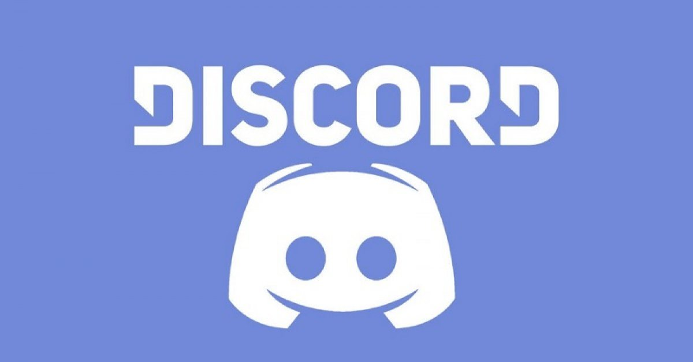

Group proccesses and communications
A group cannot operate adequately without strong communication between members and every decision must be made unanimously under the approval of each member. Thankfully, the introduction of social media platforms like Facebook, Discord, Gmail, Zalo or Skype has provided us with much more convenience in organizing virtual meetings regardless of location or time, as opposed to just the traditional face-to-face meetings. Nevertheless, physical meetings are still our preferable style of team meeting, so we would make every opportunity to host at least one face-to-face meeting per week. If this option cannot be done, then social media is a viable solution, and we can easily exchange documents and ideas by chatting on Messenger/Discord or uploading files to our shared Github or Gmail account. Moreover, we could even arrange video calls every weekend to have more interaction and for each person to have a chance to discuss their progress with the rest of the team. Because our group appreciates close-knit teamwork and always try to promote communication, we all expect each other to actively share their thoughts and opinions in the chats on a daily basis so that we can stay connected and possibly learn new things about each other. As a result, our productivity will increase exponentially which in turn will lead to desirable outcomes. We all have discipline as individuals so working together means mutual respect for one another and quick responses to team announcements. Should a team member show laziness in this aspect, we would definitely try to solve this conflict amongst ourselves first and only when things spiral out of hand will we take this problem to our lecturer for his final decision.
